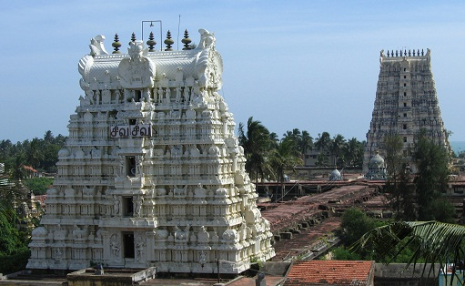

Ramanathaswamy Temple, Tamil Nadu
The Ramanathaswamy Temple lies on an island called Rameshwaram, which is located in Tamil Nadu and has been built at the place where Lord Rama performed penance for having killed Ravana. It is also acclaimed architecturally for having the longest temple corridor.